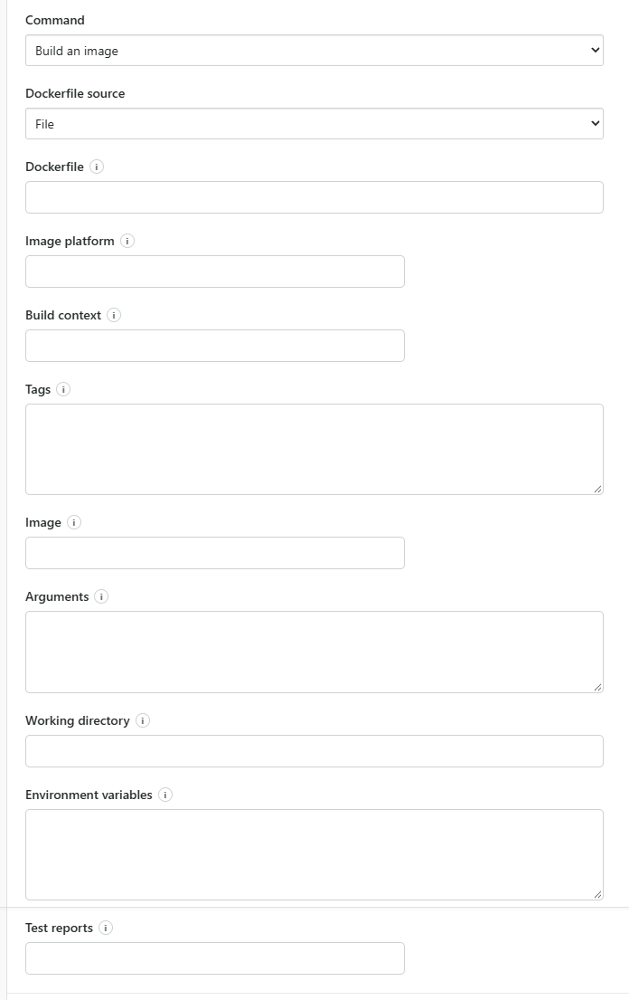

Docker
Runs the docker command: build an image, push it, or run any other docker command.
When to use it
Use it to build and push images, for example the image of your dedicated game server. The agent needs Docker running. To run a step inside a container instead, use Run step within container in any other runner.
How to set it up
- Open the build configuration and click Settings › Build Steps.
- Click Add build step. Type
Dockerin Filter step types if you like, then click the Docker tile (group Containers). - Type a Step name, for example
Build server image. - Fill in the fields described below.
- Optional: set Execute step, Conditions and Retry on failure. See The steps list and the step editor.
- Click Save.

Every field
| Field | What it does | Default | Example |
|---|---|---|---|
| Command | Build an image, Push an image or Other command. | Build an image | Push an image |
| Dockerfile source | File, URL or File content. Build only. | File | File |
| Dockerfile | Build only. Path of the Dockerfile. Empty uses the Dockerfile in the build context. | Empty | Docker/Server.Dockerfile |
| Dockerfile URL | Build only. An http or https address of a Dockerfile. It replaces the build context, which is then empty, so the Dockerfile cannot copy files. Put no user name or password in the address. | Empty | https://example.com/Dockerfile |
| Dockerfile content | Build only. The Dockerfile itself. It is written to a temporary file in the working directory, passed as -f and removed afterwards. Do not put a secret here: use a build argument from the environment. | Empty | A Dockerfile |
| Image platform | Build only. Passed as --platform, such as linux/amd64 or linux/arm64. Empty builds for the platform of the Docker daemon. | Empty | linux/amd64 |
| Build context | Build only. Folder to build from, relative to the working directory. Empty uses the working directory. | Empty | Builds/LinuxServer |
| Tags | Build only. One name:tag per line, each passed as -t. | Empty | registry.studio.example/skyforge/server:%build.number% |
| Image | Push only. The image to push, as name:tag. The agent must be signed in to the registry already. | Empty (required) | registry.studio.example/skyforge/server:57 |
| Arguments | One argument per line. Each line stays one argument. For Other command this is everything after docker. Pass a secret through the environment. | Empty | --build-arg then CONFIG=Shipping |
| Working directory, Environment variables, Test reports | The same in every runner. See Fields every runner has. This runner has no container settings. |
A worked example
Build the Linux server image from the staged build. Step name Build server image, Command Build an image, Dockerfile Docker/Server.Dockerfile, Build context Builds/LinuxServer, Tags registry.studio.example/skyforge/server:%build.number%. A second Docker step with Push an image pushes the same name.
What you see when it runs
The console shows $ docker build -f … -t … and Docker's build output, then $ docker push ….
Problems and fixes
| Problem | What to do |
|---|---|
| The docker command was not found on this agent | Install Docker there or put docker on the PATH. |
| The Docker step has no command / no image name | Fill in Arguments for Other command, or Image for push. |
| The Docker build step is set to a Dockerfile written in the step, and it is empty | Type the Dockerfile or change the source. |
| The Dockerfile address must start with http:// or https:// | Fix the address and remove any user name or password. |
| The image platform holds letters, digits, dot, dash, underscore, slash and comma only | Use a value like linux/arm64. |
| Push is denied | Sign the agent in to the registry first, as the account the agent runs as. |